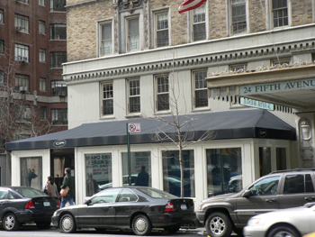
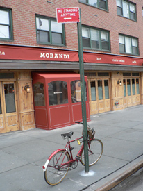

Cru v. Morandi
So many people in this city go out to eat all the time. I don’t even go out monthly. We have a few decadent nights out a year, for birthdays and Valentine’s Day, and we remember every detail of them. These meals are out of our responsible budget, but eating in every other night of the year allows us to loosen our purse strings without guilt.
Two meals I have had in the last week—at Cru and Morandi, two very different establishments—reminded me of what’s important in a restaurant.

Cru is everything I want a restaurant to be. It was Augieland who convinced me to go. I, in turn, convinced my coworkers that we should have an office dinner there. There’s a lot riding on such a choice, and nobody was disappointed. It was hours of elegance and wonderful food and service. Our three-course meal kept acquiring additional courses, each more exciting than the last. Outstanding among them were sweet potato gnocchi with cinghiale (an unfairly large portion that made it difficult to finish later courses, which were also larger than expected), a poached egg with smoked bacon under a giant slice of black truffle, a meltingly tender boneless rib-eye, and the dozen sorbets and ice creams that came for dessert, including such flavors as mascarpone and pink peppercorn. We had rosé champagne, Austrian riesling, and an excellent Dugat-Py burgundy, with calvados to round out the meal.
The room is beautiful and lush, and not so dark that you can’t read the menu. The crowd is bankers, who grow very boisterous after enough booze. Happily, the tables are several feet apart from one another, and the noise is bearable.
Service at Cru is white-glove perfection. At one point, five people delivered a course to the five of us simultaneously. Moments such as these remind me why I go out so rarely: because this level of service doesn’t come cheap, and because without it, I’m not going to be floored by my meal. And if I’m not going to be floored, what’s the point? Occasionally, food will be so good and unusual that service is an afterthought. But this hasn’t really happened to me since last August.

I got sucked in to the Morandi buzz machine over the last few weeks, and although I had fun there with J and her man—catching up, enjoying the site of A- and B-listers, examining a bevy of male models with long blond hair who we thought were women, and having a laugh over assorted upstarts flaunting their dubious press credentials and sucking up to Keith McNally—it’s only the company and the circus that I’ll remember. The food and service are a hazy memory, which isn’t to say they were bad. The fried artichokes were difficult to eat and lacked artichoke’s normal sapidity. The risotto with blueberries (and raspberries and blackberries!) and mushrooms was good, but only memorable for the berry-mushroom–truffle oil combination. Service was polite, and we weren’t rushed at all, despite it being a prime dining hour.
I give Keith McNally a pass for lackluster food, because he’s a victim of his own popularity. I’ve enjoyed all of his other restaurants, especially Pastis and Pravda. He aims for neighborhood ambience, and he certainly achieves it. Every place he opens becomes and remains extremely popular, but it’s less about the food than theperfectly orchestrated scene with flattering lighting. Morandi will be no exception. I’ll leave my table available for the hardcore diners, though; I have to save for Jean Georges, Picholine, and Per Se.
Comments
Food, schmood. I wanna hear about the A-listers!
Add a comment